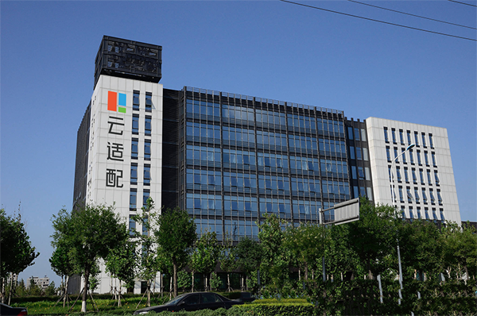
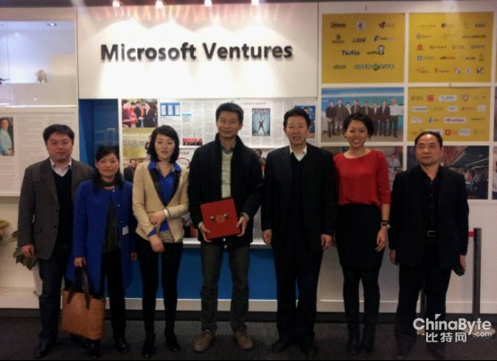

天津武清商务区多措并举搞好开发建设
在推动园区整体经济快速发展的过程中，商务区始终保持强劲的招商引资势头。累计引进项目274个，总投资超过270亿元。其中，总投资200亿元的华贸互联网生态园、代表互联网产业高端方向的微软云适配，以及863国家级信息安全云创意产业基地3个项目落户园区，形成了新的产业增长点和带动力。
今年以来，天津武清商务区抢抓京津冀协同发展、京津双城联动发展机遇，狠抓招商引资、开发建设。截至目前，累计实现引资到位额21.6亿元，占全年任务的43.2%；税收4768万元，占全年任务的47.68%；固定资产投资25.37亿元，占全年任务的43%；新增科技型企业22家，园区呈现出又好又快的发展态势。
在推动园区整体经济快速发展的过程中，商务区始终保持强劲的招商引资势头。累计引进项目274个，总投资超过270亿元。其中，总投资200亿元的华贸互联网生态园、代表互联网产业高端方向的微软云适配，以及863国家级信息安全云创意产业基地3个项目落户园区，形成了新的产业增长点和带动力。依托太平洋电信等龙头企业，新引进信息技术项目65个、导航产业项目4个、科技研发类项目100余个，主导产业集聚优势得到新提升。在产业项目建设方面，商务区全面启动了22个实体项目规划建设工程，目前开复工面积30万平方米。其中，太平洋电信的数据中心一期和展示中心已竣工，二期完成了主体施工。兴天花园云谷的展示中心主体及二次结构已完工，研发中心1号楼已完成桩基工程。国际汽车园、国际企业社区等工程正在加紧推进。同时，商务区全面加强与中新生态城合作，打造商务区生态示范园区。目前已编制完成生态指标体系，启动了绿色建筑展示中心、运维中心和可再生能源站建设，预计年底前完成园区绿建三星认定。此外，商务区不断优化园区软硬环境，在全面完成新城市政基础设施建设的基础上，高标准推进景观提升工程，已换植补植苗木近2000株，并加强物业管理和巡查力度，维护了园区秩序。与此同时他们还成立了企业服务超市，引进了一批法律、财会服务机构，积极为企业做好全方位、一条龙服务。（见习记者 孙婧怡 通讯员 闫文杰）